Chapter 9 Other Methods
9.1 Method: CA
Correspondence Analysis (CA) is a multivariate graphical technique designed to explore relationships among categorical variables. The outcome from correspondence analysis is a graphical display of the rows and columns of a contingency table that is designed to permit visualization of the salient relationships among the variable responses in a low-dimensional space. Such a representation reveals a more global picture of the relationships among row-column pairs which would otherwise not be detected through a pairwise analysis.
Calculate CA:
- Step 1: Compute row and column averages
- Step 2: Compute the expected values
- Step 3: Compute the residuals
- Step 4: Plotting labels with similar residuals close together
- Step 5: Interpreting the relationship between row and column labels
How to Interpret Correspondence Analysis Plots
Correspondence analysis does not show us which rows have the highest numbers, nor which columns have the highest numbers. It instead shows us the relativities.
- The further things are from the origin, the more discriminating they are.
- Look at the length of the line connecting the row label to the origin. Longer lines indicate that the row label is highly associated with some of the column labels (i.e., it has at least one high residual).
- Look at the length of the label connecting the column label to the origin. Longer lines again indicate a high association between the column label and one or more row labels.
- Look at the angle formed between these two lines. Really small angles indicate association. 90 degree angles indicate no relationship. Angles near 180 degrees indicate negative associations.
9.1.1 Dataset
- Data: Measurements of Weekly Earnings per Race
- Rows: There are 6 observations representing Asian/White/Black, Men/Woman.
- Columns: Total 6 variables grouping people based on Decile and Quartile ranges of their weekly income.
## White.men White.women Black.men Black.Women
## 1st decile 412 374 361 331
## 1st quartile 594 506 483 423
## 2nd quartile 920 743 680 615
## 3rd quartile 1467 1140 1046 935
## 9th decile 2278 1726 1551 1453
## Total people (in thousands) 48746 36698 6445 7142
## Asian.Men Asian.Women Hispanic.Men
## 1st decile 420 385 358
## 1st quartile 648 551 451
## 2nd quartile 1129 877 631
## 3rd quartile 1860 1411 979
## 9th decile 2699 2024 1498
## Total people (in thousands) 3684 2954 11142
## Hispanic.Women
## 1st decile 320
## 1st quartile 404
## 2nd quartile 566
## 3rd quartile 830
## 9th decile 1266
## Total people (in thousands) 7168However, here we can see that it may not be advisable to include Quartile and Decile intervals in the same analysis. Hence, we go ahead with Quartile Ranges only.
| 1stQ | 2ndQ | 3rdQ | |
|---|---|---|---|
| White.men | 594 | 326 | 547 |
| White.women | 506 | 237 | 397 |
| Black.men | 483 | 197 | 366 |
| Black.Women | 423 | 192 | 320 |
| Asian.Men | 648 | 481 | 731 |
| Asian.Women | 551 | 326 | 534 |
| Hispanic.Men | 451 | 180 | 348 |
| Hispanic.Women | 404 | 162 | 264 |
Research Question
- Does total earning of different races differ.
- Which race get less than median salary (2nd Quartile)
9.1.2 Heatmap
## Warning in heatmap.2(WE_data, Colv = FALSE, Rowv = FALSE, col =
## rev(heat.colors(16))): Discrepancy: Rowv is FALSE, while dendrogram is
## `both'. Omitting row dendogram.## Warning in heatmap.2(WE_data, Colv = FALSE, Rowv = FALSE, col =
## rev(heat.colors(16))): Discrepancy: Colv is FALSE, while dendrogram is
## `column'. Omitting column dendogram.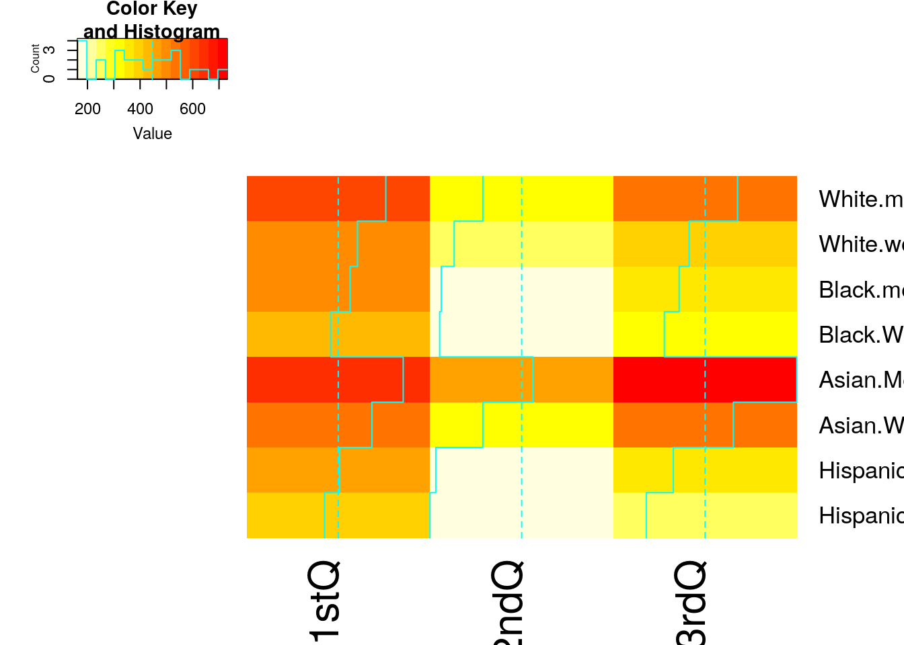
9.1.3 Scree Plot
Gives amount of information explained by corresponding component. Gives an intuition to decide which components best represent data in order to answer the research question.
P.S. The most contribution component may not always be most useful for a given research question.
PTCA4CATA::PlotScree(ev = resCA.sym$ExPosition.Data$eigs,
p.ev = we_data_inf$Inference.Data$components$p.vals,
title = 'SCREE Plot',
plotKaiser = TRUE
)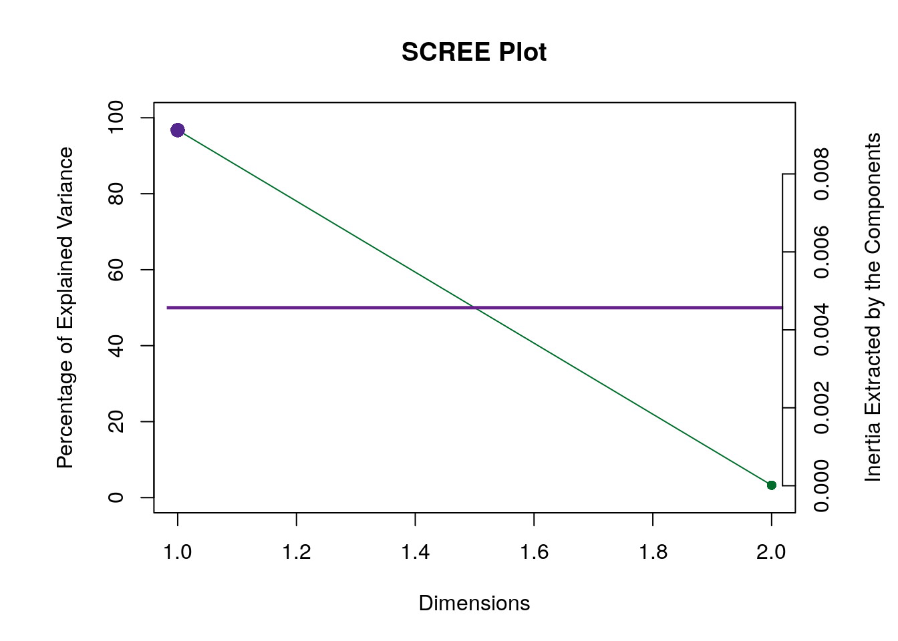
9.1.4 Factor Scores
9.1.5 Most Contributing Variables
PTCA4CATA::PrettyBarPlot2(ctr.I[,1],
threshold = 1 / NROW(ctr.I),
font.size = 4,
color4bar = gplots::col2hex(color4I),
color4ns = 'grey',
main = 'Observations: Contributions (Signed)',
ylab = 'Contributions', ylim = c(1.2*min(ctr.I),
1.2*max(ctr.I) ),
horizontal = FALSE ) 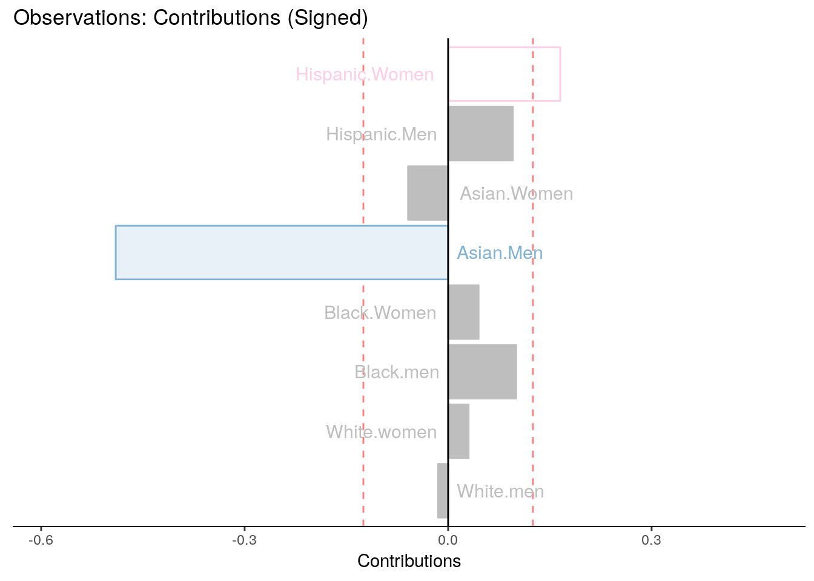
PTCA4CATA::PrettyBarPlot2(ctr.J[,1],
threshold = 1 / NROW(ctr.J),
font.size = 4,
color4bar = color4J,
color4ns = 'grey',
main = 'Observations: Contributions (Signed)',
ylab = 'Contributions', ylim = c(1.2*min(ctr.J),
1.2*max(ctr.J) ),
horizontal = FALSE ) 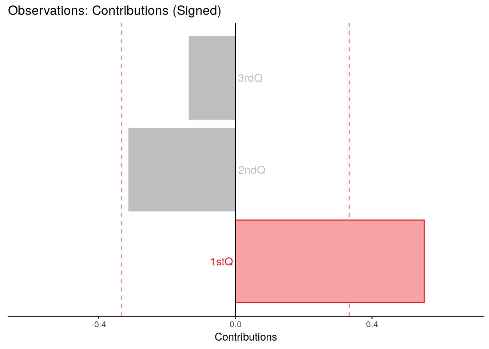
9.1.6 Inference CA
ba001.BR1 <- PrettyBarPlot2(BR[,laDim],
threshold = 2,
font.size = 5,
color4bar = gplots::col2hex(col4J), # we need hex code
main = paste0('Bootstrap ratio ',laDim),
ylab = 'Bootstrap ratios'
#ylim = c(1.2*min(BR[,laDim]), 1.2*max(BR[,laDim]))
)
print(ba001.BR1)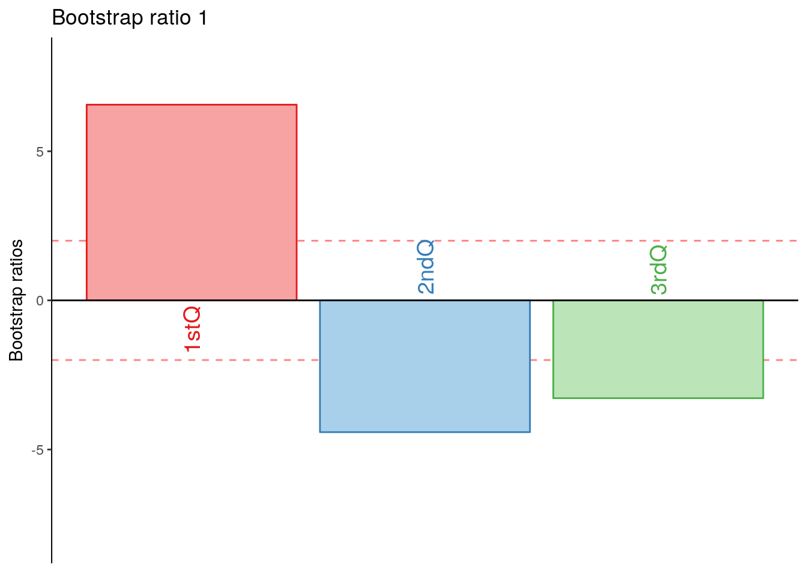
wedata.BR1 <- PrettyBarPlot2(BR[,laDim],
threshold = 2,
font.size = 5,
color4bar = gplots::col2hex(col4J), # we need hex code
main = paste0('Bootstrap ratio ',laDim),
ylab = 'Bootstrap ratios'
#ylim = c(1.2*min(BR[,laDim]), 1.2*max(BR[,laDim]))
)
print(wedata.BR1)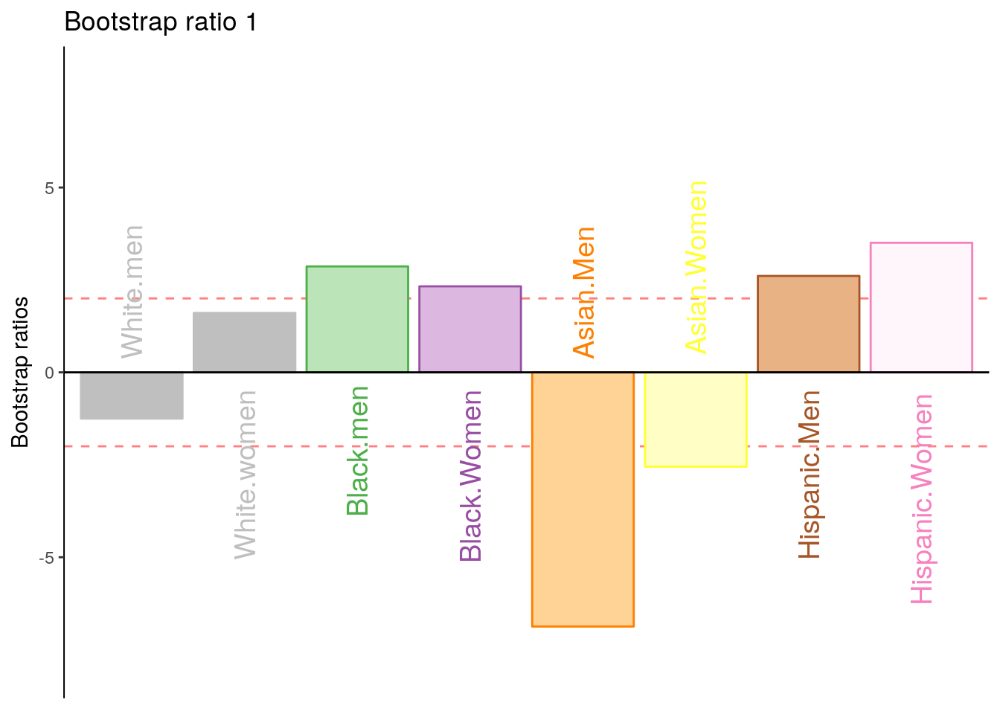
## Skipping install of 'PTCA4CATA' from a github remote, the SHA1 (0a982b85) has not changed since last install.
## Use `force = TRUE` to force installationsuppressMessages(library(PTCA4CATA))
# PTCA4CATA should first to avoid conflict with TInPosition
suppressMessages(library(ExPosition))
#suppressMessages(library(InPosition))
#suppressMessages(library(TInPosition))
suppressMessages(library(ggplot2))
suppressMessages(library(dplyr))
suppressMessages(library(officer))
suppressMessages(library(flextable))
suppressMessages(library(rvg))
suppressMessages(library(useful))
suppressMessages(library(DistatisR))
library(RColorBrewer)
# Source the function file:
#
# install.packages('TExPosition')
# install.packages('MExPosition')
library(MExPosition)
rm(list = ls())9.2 DiSTATIS
9.2.1 Dataset
| bc001 | bc002 | bc003 | bc004 | bc005 | bc006 | bc007 | bc008 | bc009 | bc010 | bc011 | bc012 | bc013 | bc014 | bc015 | bc016 | bc017 | bc018 | bc019 | bc020 | bc021 | bc022 | bc023 | bc024 | bc025 | bc026 | bc027 | bc028 | bc029 | bc030 | bc031 | bc032 | bc033 | bc034 | bc035 | bc036 | bc037 | |
|---|---|---|---|---|---|---|---|---|---|---|---|---|---|---|---|---|---|---|---|---|---|---|---|---|---|---|---|---|---|---|---|---|---|---|---|---|---|
| Bach.Arrau.1 | 1 | 2 | 1 | 2 | 3 | 1 | 1 | 3 | 1 | 1 | 2 | 2 | 2 | 2 | 3 | 1 | 1 | 2 | 1 | 3 | 3 | 3 | 1 | 1 | 1 | 1 | 1 | 1 | 2 | 3 | 1 | 1 | 1 | 3 | 3 | 1 | 2 |
| Bach.Arrau.2 | 2 | 1 | 1 | 2 | 3 | 1 | 1 | 2 | 1 | 1 | 2 | 3 | 1 | 3 | 2 | 3 | 2 | 3 | 1 | 1 | 1 | 2 | 2 | 3 | 2 | 2 | 3 | 3 | 2 | 3 | 3 | 1 | 2 | 3 | 3 | 3 | 1 |
| Bach.Arrau.3 | 1 | 3 | 2 | 1 | 1 | 1 | 2 | 2 | 3 | 3 | 3 | 2 | 3 | 2 | 1 | 3 | 1 | 1 | 1 | 1 | 3 | 1 | 3 | 1 | 1 | 1 | 3 | 3 | 1 | 2 | 2 | 3 | 3 | 3 | 1 | 1 | 1 |
| Bach.Baren.4 | 1 | 3 | 2 | 2 | 2 | 1 | 2 | 3 | 1 | 1 | 3 | 1 | 1 | 2 | 1 | 1 | 1 | 1 | 1 | 2 | 3 | 1 | 1 | 1 | 1 | 1 | 3 | 3 | 1 | 3 | 1 | 3 | 3 | 3 | 1 | 1 | 1 |
| Bach.Baren.5 | 1 | 1 | 2 | 3 | 3 | 3 | 3 | 3 | 1 | 2 | 2 | 2 | 3 | 3 | 1 | 3 | 1 | 3 | 1 | 3 | 2 | 1 | 1 | 3 | 3 | 1 | 3 | 1 | 2 | 1 | 1 | 2 | 3 | 1 | 3 | 3 | 3 |
| Bach.Baren.6 | 1 | 3 | 3 | 2 | 3 | 1 | 2 | 1 | 3 | 1 | 3 | 2 | 3 | 1 | 2 | 2 | 3 | 2 | 1 | 2 | 1 | 1 | 3 | 3 | 1 | 1 | 2 | 2 | 1 | 3 | 3 | 3 | 3 | 3 | 1 | 1 | 2 |
| Bach.Pires.7 | 1 | 2 | 3 | 3 | 2 | 3 | 1 | 3 | 3 | 1 | 2 | 1 | 3 | 3 | 2 | 3 | 1 | 3 | 3 | 3 | 1 | 3 | 2 | 1 | 2 | 3 | 1 | 3 | 1 | 1 | 1 | 2 | 3 | 1 | 3 | 3 | 1 |
| Bach.Pires.8 | 2 | 3 | 1 | 2 | 3 | 1 | 2 | 2 | 1 | 3 | 1 | 3 | 2 | 2 | 3 | 2 | 2 | 2 | 2 | 2 | 3 | 2 | 1 | 1 | 1 | 2 | 2 | 2 | 3 | 3 | 2 | 2 | 2 | 3 | 2 | 1 | 3 |
| Bach.Pires.9 | 1 | 3 | 2 | 1 | 3 | 3 | 1 | 2 | 2 | 2 | 1 | 2 | 1 | 3 | 2 | 3 | 3 | 3 | 1 | 2 | 1 | 2 | 2 | 1 | 3 | 2 | 3 | 1 | 1 | 1 | 1 | 1 | 2 | 1 | 3 | 3 | 1 |
| Bach.Richt.10 | 2 | 1 | 1 | 3 | 2 | 2 | 2 | 2 | 2 | 3 | 1 | 3 | 2 | 1 | 3 | 2 | 2 | 2 | 2 | 1 | 2 | 3 | 2 | 2 | 3 | 3 | 2 | 3 | 3 | 2 | 2 | 1 | 1 | 2 | 2 | 1 | 3 |
| Bach.Richt.11 | 3 | 3 | 3 | 2 | 1 | 3 | 1 | 3 | 3 | 1 | 3 | 3 | 3 | 2 | 2 | 2 | 3 | 1 | 3 | 2 | 1 | 1 | 3 | 1 | 2 | 2 | 1 | 1 | 2 | 3 | 1 | 3 | 3 | 2 | 1 | 2 | 2 |
| Bach.Richt.12 | 2 | 1 | 1 | 1 | 1 | 2 | 3 | 3 | 3 | 3 | 1 | 3 | 2 | 1 | 3 | 2 | 1 | 2 | 2 | 1 | 2 | 3 | 3 | 2 | 3 | 2 | 2 | 3 | 3 | 2 | 3 | 1 | 1 | 2 | 2 | 1 | 2 |
| Beet.Arrau.13 | 1 | 2 | 2 | 2 | 3 | 1 | 2 | 1 | 1 | 2 | 2 | 3 | 1 | 2 | 2 | 1 | 1 | 2 | 3 | 2 | 2 | 2 | 2 | 2 | 2 | 3 | 2 | 3 | 3 | 2 | 2 | 3 | 3 | 2 | 1 | 1 | 1 |
| Beet.Arrau.14 | 3 | 2 | 3 | 3 | 1 | 3 | 1 | 1 | 2 | 1 | 3 | 1 | 3 | 3 | 2 | 2 | 3 | 3 | 3 | 3 | 3 | 2 | 1 | 1 | 2 | 1 | 1 | 2 | 1 | 1 | 3 | 3 | 3 | 1 | 1 | 2 | 1 |
| Beet.Arrau.15 | 3 | 2 | 3 | 1 | 2 | 2 | 1 | 1 | 2 | 3 | 3 | 2 | 1 | 1 | 3 | 2 | 1 | 1 | 3 | 1 | 2 | 1 | 1 | 3 | 3 | 3 | 1 | 2 | 3 | 3 | 1 | 3 | 2 | 3 | 1 | 1 | 1 |
| Beet.Baren.16 | 1 | 3 | 3 | 3 | 2 | 3 | 2 | 1 | 2 | 1 | 3 | 1 | 3 | 1 | 1 | 1 | 1 | 3 | 3 | 1 | 3 | 2 | 3 | 3 | 3 | 1 | 1 | 3 | 3 | 3 | 3 | 3 | 3 | 2 | 1 | 2 | 2 |
| Beet.Baren.17 | 1 | 3 | 2 | 2 | 2 | 1 | 1 | 1 | 1 | 1 | 2 | 1 | 3 | 3 | 1 | 1 | 3 | 3 | 3 | 3 | 3 | 1 | 2 | 1 | 1 | 1 | 3 | 3 | 2 | 1 | 1 | 2 | 3 | 1 | 3 | 2 | 1 |
| Beet.Baren.18 | 3 | 1 | 3 | 2 | 3 | 1 | 1 | 3 | 2 | 1 | 3 | 2 | 3 | 2 | 1 | 1 | 1 | 2 | 3 | 2 | 1 | 1 | 1 | 2 | 1 | 2 | 1 | 3 | 2 | 3 | 3 | 3 | 3 | 3 | 1 | 1 | 2 |
| Beet.Pires.19 | 1 | 3 | 3 | 3 | 2 | 2 | 3 | 1 | 2 | 1 | 3 | 3 | 2 | 2 | 2 | 1 | 3 | 2 | 3 | 3 | 1 | 1 | 1 | 1 | 3 | 2 | 1 | 2 | 2 | 3 | 3 | 3 | 3 | 3 | 1 | 1 | 2 |
| Beet.Pires.20 | 3 | 3 | 3 | 2 | 1 | 1 | 2 | 1 | 2 | 2 | 2 | 3 | 3 | 2 | 1 | 1 | 1 | 1 | 3 | 2 | 3 | 1 | 3 | 1 | 2 | 2 | 1 | 3 | 1 | 3 | 1 | 3 | 3 | 2 | 1 | 2 | 2 |
| ``` |
## [1] Bootstrap On Factor Scores. Iterations #:
## [2] 10009.2.2 SCREE Plot
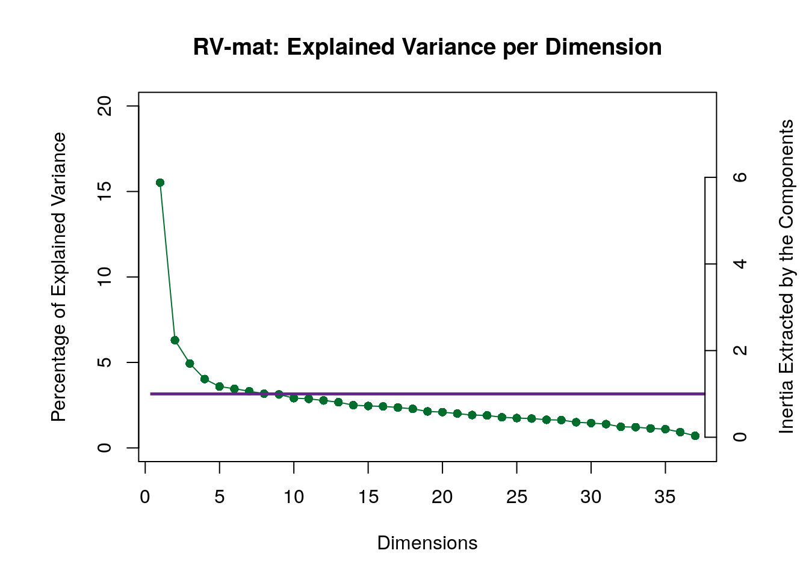
9.2.3 Plotting Assessor Matrix
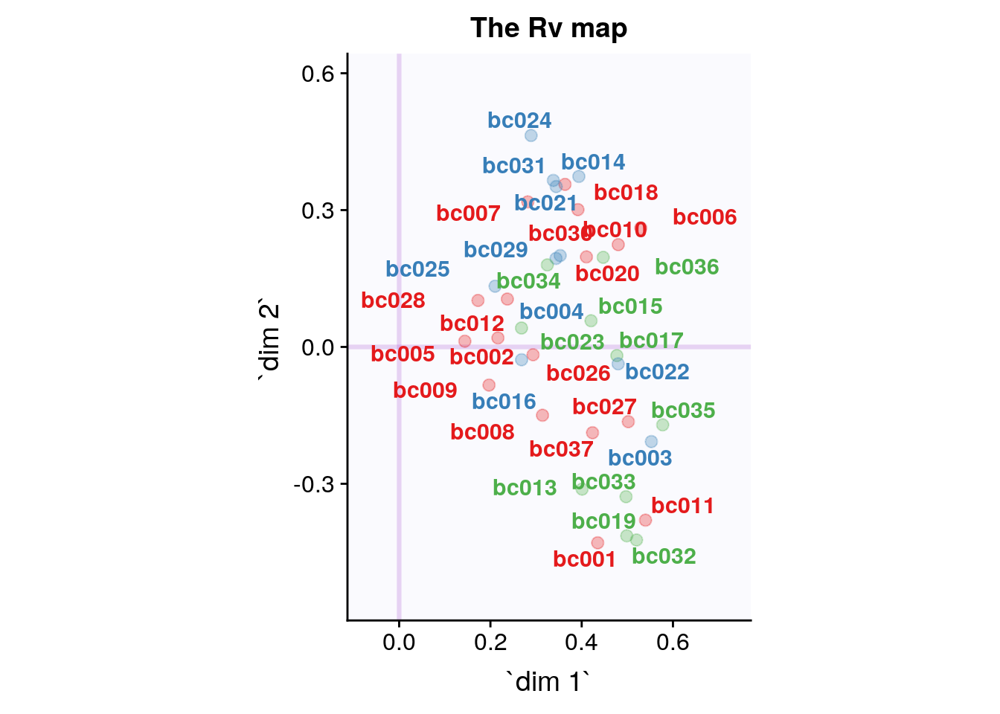
9.2.4 ConvexHull
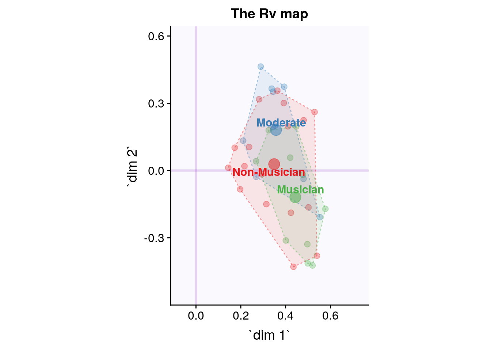
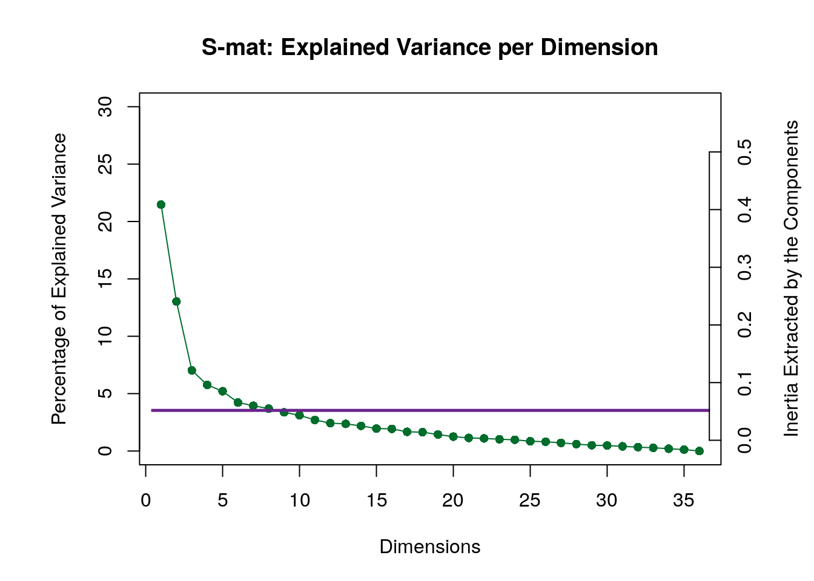
9.2.5 I Set
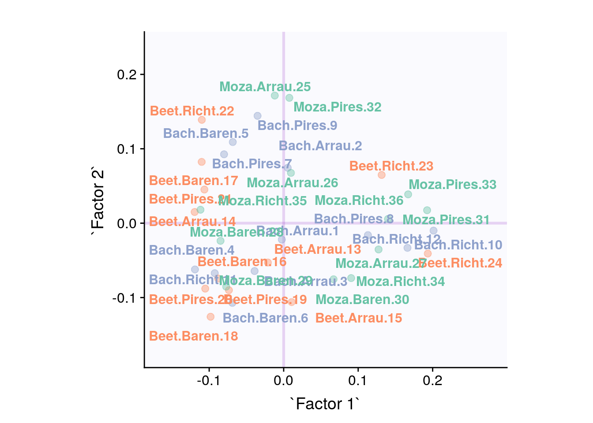
## Warning: Removed 3 rows containing missing values (geom_text_repel).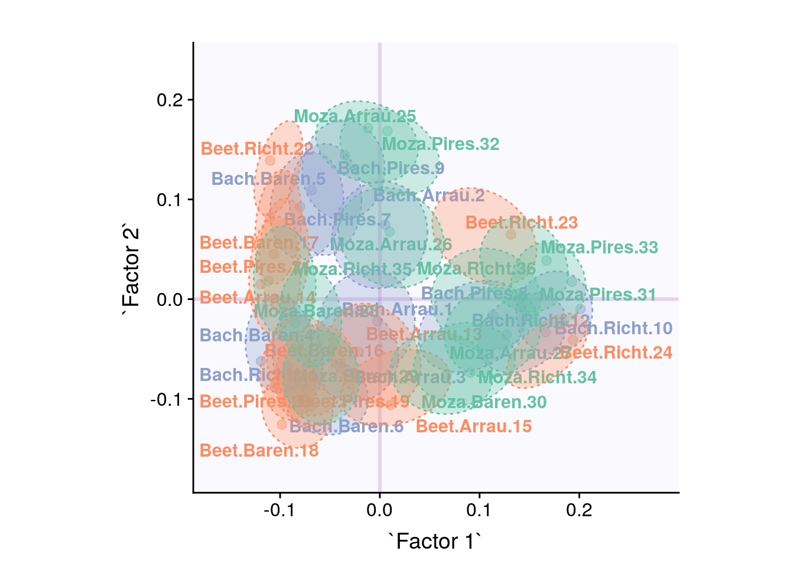